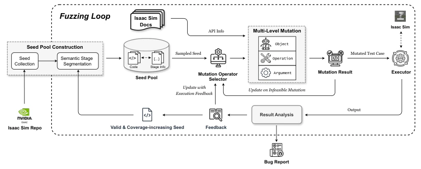
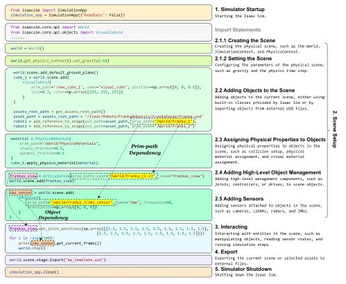
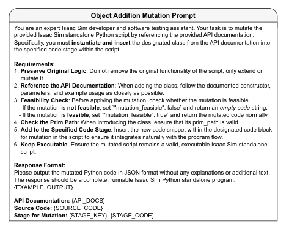
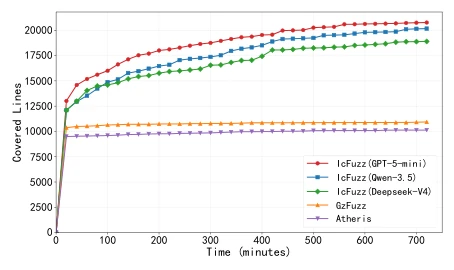
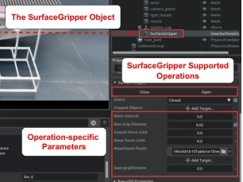
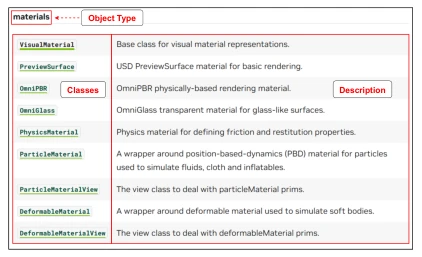

这篇论文给 Isaac Sim 这个“黑盒”来了个深度体检。作为首个针对 Isaac Sim 的 Fuzzing 工具，IcFuzz 确实有点东西，靠 LLM 把脚本拆成语义阶段，再搞多层变异，最后用多臂老虎机调度。结果挺亮眼，代码覆盖率翻倍，还挖出 11 个 bug。但话说回来，LLM 调用成本高不高？测试周期长不长？毕竟 Isaac Sim 本身加载场景就慢，这工具跑起来是不是得喝杯咖啡？而且只测崩溃 bug，物理约束错误这种“软伤”可能漏掉。总的来说，是仿真器测试领域的一次有力尝试，但“大模型依赖症”这毛病得治治，否则成本太高。
This paper conducts a thorough inspection of Isaac Sim, this "black box". As the first Fuzzing tool targeting Isaac Sim, IcFuzz indeed demonstrates significant capabilities, leveraging LLMs to decompose scripts into semantic stages, followed by multi-layer mutation, and finally scheduling via a multi-armed bandit. The results are impressive, with code coverage doubling and 11 bugs unearthed. However, one must ask: is the LLM invocation cost high? Is the test cycle lengthy? After all, Isaac Sim itself loads scenes slowly; does running this tool require drinking a cup of coffee? Furthermore, since it only tests for crash bugs, "soft injuries" such as physical constraint errors may be overlooked. Overall, this represents a powerful attempt in the field of simulator testing, but the "large model dependency syndrome" needs to be addressed, otherwise the cost is too high.
The development of Embodied AI relies on simulators; NVIDIA Isaac Sim has become mainstream due to GPU acceleration and physics engines [53]. However, complex architectures lead to frequent software bugs, impacting training safety and data integrity. Existing Fuzzing methods such as AFL++ [15] or GzFuzz [63] struggle to address the three major challenges of Isaac Sim: 1) Context-aware object semantics (e.g., SimulationApp [50] must be initialized before creating objects); 2) Hierarchical control granularity (objects, operations, parameters); 3) Vast state space. Inputs generated by generic fuzzers are often rejected for violating semantics, and GzFuzz can only operate on model-level commands, unable to reach parameter-level. Therefore, an automated testing method capable of understanding simulator process semantics and enabling hierarchical exploration is urgently needed; otherwise, simulator reliability cannot be discussed.
The overall workflow of IcFuzz is illustrated in Figure 3. First, official scripts are collected to construct a seed pool, utilizing LLMs for semantic stage segmentation (e.g., startup, scene setup, interaction, etc.) to decompose code into structured stages. The core innovation lies in multi-layer mutation: 1) Object-level mutation: Select object types that can be added or replaced based on stage constraints (see Table 1), utilizing LLMs to generate code insertions; 2) Operation-level mutation: Replace or add method calls of objects; 3) Parameter-level mutation: Directly modify numeric parameters within the AST. To balance exploration and exploitation, a multi-armed bandit mechanism based on the UCB algorithm [2] is adopted to schedule mutation operators, with a reward function combining coverage growth and crash discovery. Additionally, feasibility analysis is conducted via rules + LLM to discard invalid mutations and reduce execution overhead. Finally, crashes serve as the test oracle, effective seeds flow back into the seed pool, forming a closed loop.

Figure 3: Overall Workflow of IcFuzz.

Figure 4: An example of semantic stage segmentation for a standalone Python script in Isaac Sim.

Figure 6: Simplified prompt for object addition mutation.
Experiments compared Atheris [20] and GzFuzz [63]. Tests were run for 12 hours on Isaac Sim 5.0/5.1. IcFuzz covered an average of 20,771 lines of code, representing 205% of Atheris and 190% of GzFuzz. It detected 7 crashes (3.7 unique), whereas the baseline detected no crashes. Long-term testing (4 months) identified 11 bugs, 9 of which were confirmed fixed by developers. Ablation experiments verified the necessity of semantic segmentation, multi-layer mutation, and MAB scheduling. Figure 7 illustrates the trend of coverage growth over time. Although only detecting crashes, it demonstrates the effectiveness of hierarchical mutation in complex simulators, offering new perspectives for simulator quality assurance.

Figure 10: Average code coverage over time.
其他图片Other Figures

Figure 2: The SurfaceGripper in Isaac Sim.

Figure 5: An excerpt from the Isaac Sim documentation [47].